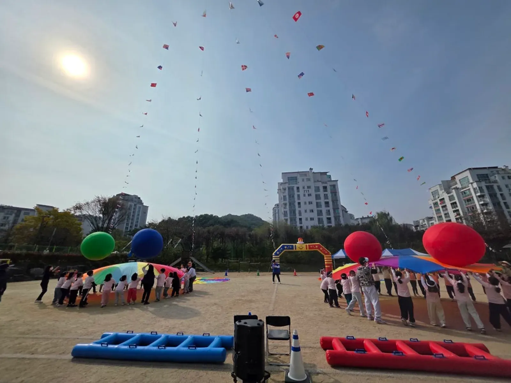

행사 준비 · 2026년 11월 9일
행사 음향 문의 사진 준비: 전원·객석·반입 동선 확인표
행사 음향 문의 사진은 장소 전체, 무대와 객석, 운영 위치, 기존 장비 라벨, 반입 동선을 목적별로 나눠 찍어 보내면 상담이 빨라집니다. 다만 사진만으로 전기 안전이나 장비 사양을 확정할 수는 없어서, 확인할 사람과 확인할 내용을 나누어 두는 것이 중요합니다.
문의 전에 준비할 7가지 사진과 전달 방법을 순서대로 정리했습니다.

- 행사 음향 문의 사진은 7가지 항목을 기본으로 준비하고, 장소에 따라 추가 사진과 현장 확인이 필요합니다.
- 사진은 전기 안전이나 최종 장비 사양을 증명하지 못하므로 용량, 접지, 연결은 장소 관리자와 자격을 갖춘 담당자가 확인합니다.
- 콘센트는 닫힌 상태의 겉모습만 찍고, 패널을 열거나 직접 배선하지 않습니다.
- 얼굴, 차량 번호, 보안 화면, 계정 정보가 나오지 않게 찍고 파일 이름에 사진 종류를 붙입니다.
- 견적은 금액보다 포함 범위를 나란히 놓고 비교하고, 답이 없는 항목은 체크리스트로 남깁니다.

1. 사진이 있으면 음향 상담이 달라지는 이유
음향 상담에서 가장 먼저 필요한 것은 장소가 어떤 모양이고, 소리를 어디서 내보내며, 장비가 어디로 들어가는지입니다. 말로 설명하면 사람마다 표현이 달라 오해가 생기기 쉽습니다.
사진 몇 장이 있으면 같은 장면을 보며 이야기할 수 있어 질문이 크게 줄어듭니다. 담당자가 휴대전화로 찍을 수 있는 수준이면 충분합니다.
그렇다고 사진이 모든 것을 알려 주지는 않습니다. 전기 여유, 접지, 장비 연결이 맞는지는 눈으로 볼 수 없어서 장소 관리자와 자격을 갖춘 장비 담당자가 현장에서 확인해야 합니다.
이 글의 목표는 그 확인을 대신하는 것이 아니라 확인하는 사람이 일하기 쉽게 자료를 준비하는 것입니다.
힐링엔터테인먼트는 음향 · 무대 · 조명 · DJ의 장비 설치와 현장 운영을 맡습니다. 상담과 견적 단계에서는 장소 · 진행 시간 · 필요한 장비를 확인하는데, 아래 사진이 있으면 이 단계가 한결 수월합니다.
2. 행사 음향 문의 사진 7개 항목 확인표
한 장에 여러 목적을 담으려 하지 말고 목적별로 나눠 찍으면 나중에 찾기 쉽습니다. 표의 순서대로 찍으면 입구에서 안쪽으로 걸어 들어가는 흐름이 되어 빠뜨리는 장면이 적습니다.
| 번호 | 사진 | 무엇을 담나요 | 주의할 점 |
|---|---|---|---|
| 1 | 장소 전체 모습 | 입구 쪽에서 공간 전체가 보이게 한 장 | 사람이 크게 나오지 않는 시간에 찍습니다 |
| 2 | 무대 · 객석 줄 | 무대 위치에서 객석 쪽, 객석에서 무대 쪽 각각 | 의자를 놓을 자리와 통로가 보이게 합니다 |
| 3 | 운영 위치 | 음향을 조작할 자리 후보와 무대와의 시야 | 컴퓨터 화면이나 모니터가 나오지 않게 합니다 |
| 4 | 기존 장비 라벨 | 이미 설치된 스피커 · 믹서 · 마이크의 이름표 | 라벨 글자가 읽히게 가까이서 찍고, 사양은 추정하지 않습니다 |
| 5 | 콘센트 겉모습 | 닫힌 상태의 콘센트와 주변 벽면, 관리자 확인 메모 | 패널을 열거나 만지지 않습니다 |
| 6 | 반입 동선 | 차량이 서는 곳에서 행사 공간까지 문 · 계단 · 승강기 | 문 앞과 계단 입구를 따로 찍습니다 |
| 7 | 제한 사항 표시 | 소음 제한 안내, 설치 금지 구역 등 장소의 제한 | 사진 위에 손글씨나 화살표로 표시합니다 |
7번 사진은 장소가 알려 준 제한을 기록하는 용도입니다. 사진 위에 "여기는 설치 금지", "이 문은 관리자 확인 필요"처럼 적어 두면 받는 사람이 같은 곳을 같은 뜻으로 읽습니다.
확인되지 않은 내용은 표시하지 말고 질문으로 남깁니다.
3. 전원 사진은 겉모습만 찍고 판단은 담당자에게 맡깁니다
전원은 사진을 가장 조심해서 다뤄야 하는 부분입니다. 콘센트가 보인다고 해서 장비를 연결해도 된다는 뜻은 아닙니다.
사용할 수 있는 용량, 접지 여부, 다른 설비와 나눠 쓰는지는 사진으로 알 수 없습니다. 전원 관련 판단은 장소 관리자와 자격을 갖춘 담당자의 몫입니다.
- 콘센트는 닫힌 상태의 겉모습과 위치만 찍습니다.
- 분전반이나 덮개를 열어서 찍지 않습니다.
- 멀티탭을 이어 붙이거나 직접 연결을 시도하지 않습니다.
- 사진 옆에는 장소 관리자의 확인 여부만 메모하고, 확인되지 않았다면 대기 중이라고 적습니다.
장소 관리자에게는 "행사 때 음향 장비에 쓸 전원을 사용할 수 있는지, 확인해 줄 담당자가 누구인지"만 물으면 됩니다. 숫자는 관리자와 장비 담당자가 서로 확인할 일이니 문의하는 쪽이 추측해서 적을 필요가 없습니다.
4. 객석과 반입 동선은 걷는 순서대로 찍습니다
객석 사진은 무대 쪽과 객석 쪽에서 한 장씩 찍습니다. 소리가 어디까지 가야 하는지, 기둥이나 벽처럼 소리를 가리는 것이 있는지 가늠하는 자료가 됩니다.
정확한 거리나 규모는 사진으로 정할 수 없으니 적지 않고, 현장 확인 때 함께 보면 됩니다.

반입 동선은 장비가 지나가는 길을 순서대로 찍습니다. 차량이 서는 곳, 건물 입구 문, 복도, 계단이나 승강기, 행사 공간 문 앞의 순서입니다.
계단이 있다면 입구와 방향이 보이게 찍고, 문은 열린 상태와 닫힌 상태 중 담당자가 아는 쪽을 메모합니다. 폭이나 높이를 눈대중으로 적지 않습니다.

카메라는 가로로 들고 눈높이에서 찍으면 공간을 이해하기 쉽습니다. 어두운 곳은 불을 켠 상태로 한 장 더 찍어 두면 라벨 글자가 읽히는 경우가 많습니다.
실내 행사라면 무대와 객석 사이 통로, 음향 운영 자리 후보에서 무대가 보이는지도 함께 담아 주세요. 실외 행사라면 천막이나 지붕의 유무와 바닥 상태를 같이 찍으면 도움이 됩니다.
5. 개인정보를 피해 찍고 파일 이름을 붙입니다
문의용 사진에는 필요한 정보만 담습니다. 사람 얼굴이 크게 나온 사진, 차량 번호판, 보안 모니터나 출입 통제 화면, 계정이나 비밀번호가 적힌 메모는 담지 않습니다.
부득이하게 찍혔다면 다시 찍거나 가려서 보냅니다. 장소 관리자의 연락처 같은 개인 정보는 사진 문의에 적지 않고 필요할 때 따로 상담합니다.
파일 이름은 "번호_사진 종류_공간 이름" 순서로 붙이면 정리하기 쉽습니다. 행사 날짜는 파일 이름에 넣지 않고 문의 본문에 적습니다.
- 01_전체모습_본관홀
- 02_무대객석_본관홀
- 03_운영위치_본관홀
- 04_장비라벨_본관홀
- 05_콘센트겉모습_본관홀
- 06_반입동선_계단입구
- 07_제한사항_안내문
같은 종류의 사진이 여러 장이면 뒤에 a, b를 붙입니다. 받는 쪽도 어떤 사진이 빠졌는지 바로 알 수 있습니다.
6. 견적은 포함 범위로 비교하고, 답 없는 질문은 목록으로 남깁니다
견적을 받으면 금액부터 보게 되지만 먼저 확인할 것은 무엇이 포함되어 있는가입니다. 같은 이름의 항목도 설치, 운영 인력, 철수, 예비 장비의 포함 여부가 다를 수 있습니다.
설치와 철수 시간, 행사 중 운영 인력, 기존 장비 사용 여부, 마이크와 음악 재생 방식이 어느 쪽에 포함되는지 같은 표에 놓고 보세요. 모르는 항목은 그대로 되물어 보는 것이 가장 빠릅니다.
사진을 보낸 뒤에도 답을 받지 못한 질문은 남기 마련입니다. 아래처럼 적어 두면 누가 무엇을 확인해야 하는지 분명해집니다.
- 전원 사용 가능 여부와 확인 담당자: 관리자 확인 대기
- 장소의 소음 제한 안내 여부
- 반입 가능한 문과 계단 · 승강기 이용 가능 여부
- 설치와 철수에 쓸 수 있는 시간대
- 기존 장비를 사용할 수 있는지, 사용한다면 누가 확인하는지
- 행사 당일 장소 관리자의 연락 방법
준비한 사진과 질문은 자동 견적서에서 필요한 음향 항목을 고른 뒤 견적 문의에 함께 남겨 주세요. 비슷한 장면은 현장 갤러리에서 볼 수 있습니다.
행사 진행 중에는 통화가 어려워 문자나 카톡을 남겨 주시면 확인하겠습니다. 회사 설명은 회사소개에 있습니다.
자주 묻는 질문
사진만 보내면 음향 장비가 정해지나요?
아니요. 사진은 장소를 이해하는 자료이고, 최종 장비 사양은 현장과 필요한 내용을 확인한 뒤 정해집니다.
콘센트 안쪽이나 분전반도 찍어야 하나요?
아니요. 닫힌 상태의 겉모습만 찍고, 용량 · 접지 · 연결은 장소 관리자와 자격을 갖춘 담당자가 확인합니다.
사람이 찍힌 사진은 보내도 되나요?
얼굴이 크게 나온 사진은 피하고, 사람이 없는 시간에 다시 찍는 것이 좋습니다.
사진을 몇 장 보내야 하나요?
이 글의 7가지 종류를 기준으로 하되, 장소에 따라 해당하지 않는 항목은 건너뛰어도 됩니다.
행사 날짜가 정해지셨나요?
날짜 · 지역 · 인원 · 행사 종류만 알려 주시면 행사에 맞춰 상담 · 견적을 안내드립니다. 행사 중엔 통화가 어려우니 문자 · 카톡을 남겨 주세요.